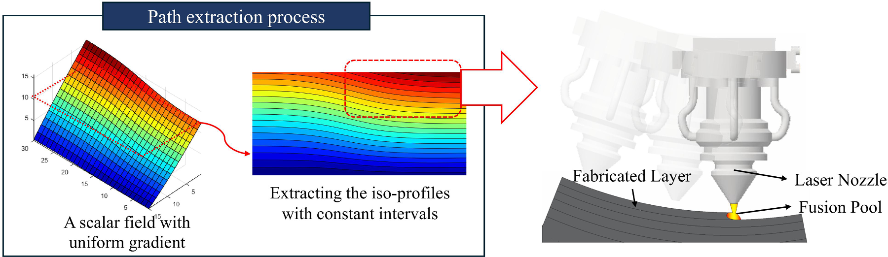
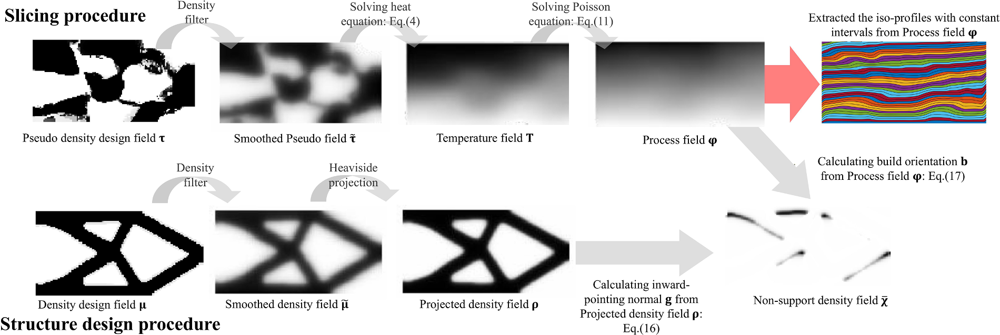
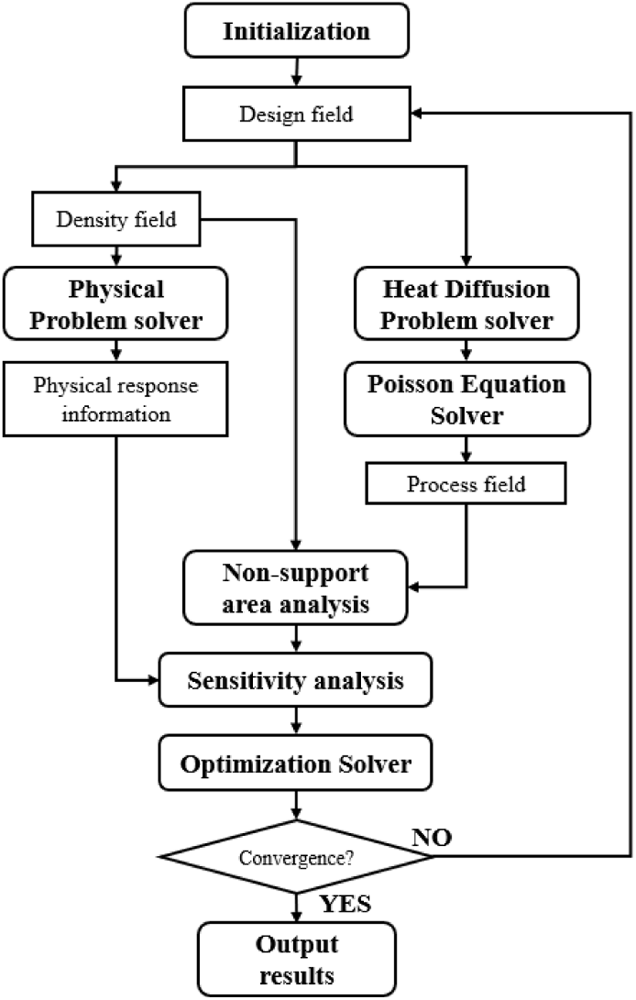
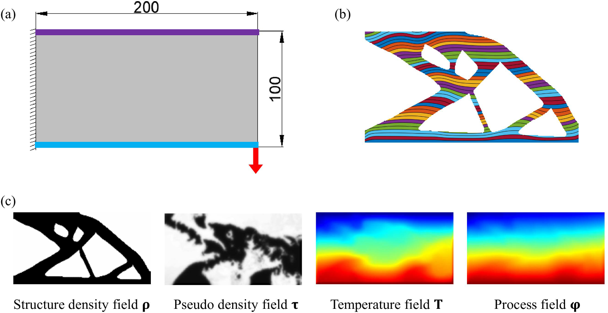
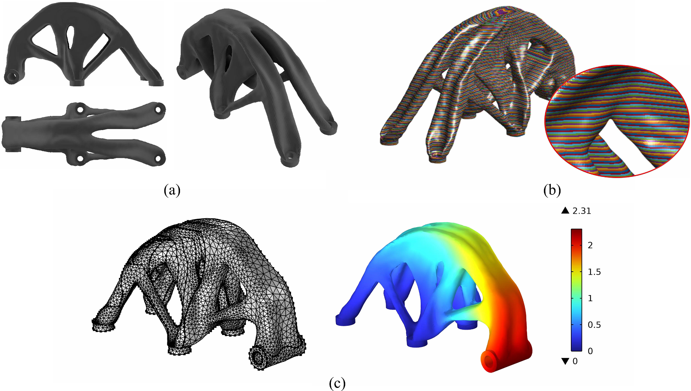
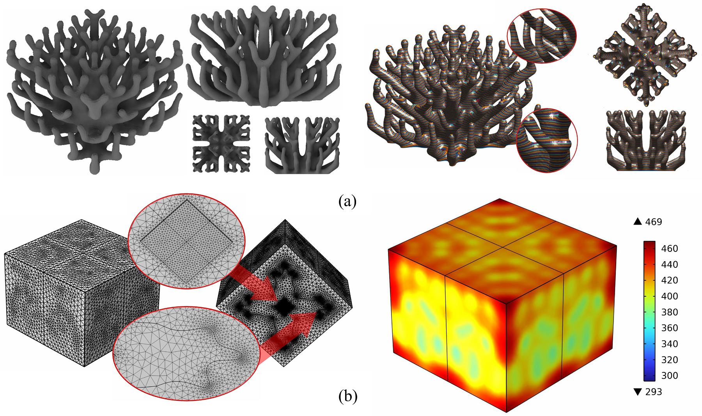
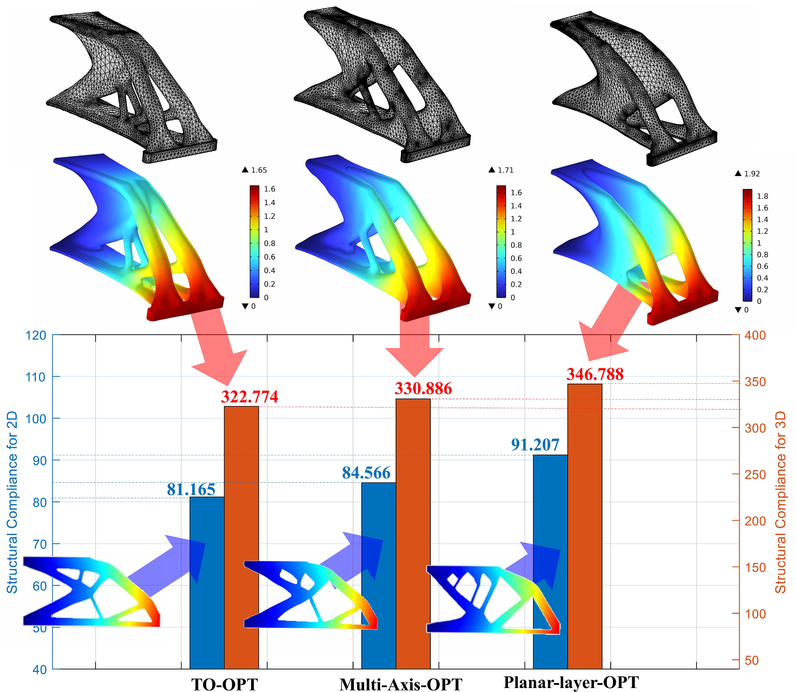
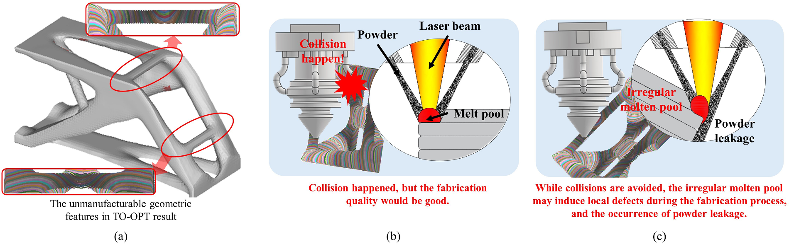
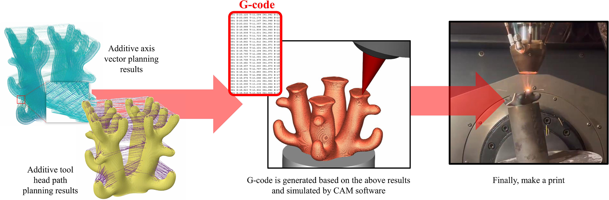

A scalar process field provides continuous layer sequence and spatial distance information.
Computer Methods in Applied Mechanics and Engineering - 2025
Self-support structure topology optimization for multi-axis additive manufacturing incorporated with curved layer slicing
A differentiable framework that concurrently optimizes structural topology and curved fabrication layers, enabling self-supporting designs for multi-axis additive manufacturing without sacrificing unnecessary structural performance.
1 Department of Mechanical Engineering, Graduate School of Engineering, Osaka University, Japan
2 School of Mechanical Engineering, Shandong University, China
3 Department of Mechanical and Aerospace Engineering, Hong Kong University of Science and Technology, Hong Kong
4 Smart Manufacturing Thrust, Hong Kong University of Science and Technology (Guangzhou), China
* Corresponding authors
Abstract
Multi-axis additive manufacturing expands the range of printable geometries, but the slicing strategy directly affects support requirements and nozzle accessibility. This work embeds a numerically tractable process-planning model into density-based topology optimization. Heat diffusion first supplies a fabrication sequence, and a Poisson problem transforms it into a geodesic-like process field with nearly uniform gradient magnitude. Curved layer normals and structural boundary gradients then define a differentiable self-support measure. By optimizing the structural and pseudo-density fields together, the method balances physical performance, continuous curved slicing, and support-free manufacturability.
Layer normals and part-boundary gradients identify regions that violate the overhang requirement.
Structural density and process pseudo-density evolve together in one optimization framework.
Linear PDEs and adjoint sensitivities allow the use of mature gradient-based optimizers.
Method
The method begins with a heat-diffusion problem defined between the printing start and end boundaries. Normalized temperature gradients guide a Poisson equation whose solution is the process field. Iso-values of this field define successive curved layers. In parallel, filtered and projected structural densities describe the part boundary. Comparing the curved-layer normal with the local boundary gradient yields a non-support field that is aggregated as an explicit optimization constraint.



Numerical Results
Two-dimensional cantilever and bridge examples, together with three-dimensional bracket and heat-sink cases, demonstrate that the process field can evolve with structural topology while retaining smooth, continuous layer patterns. The comparison uses conventional topology optimization, planar-layer self-support optimization, and the proposed multi-axis formulation.




Manufacturability and Printing
Directly slicing an unconstrained topology can create unavoidable nozzle collisions or unstable deposition around horizontal connections. The proposed concurrent formulation modifies both topology and layer geometry to reduce these conflicts. For the demonstrated heat-sink workflow, normalized process iso-surfaces are converted into 175 STL layers with an average thickness of 0.50 mm plus or minus 0.02 mm. Boundary paths are extracted, converted to G-code, verified in CAM software, and finally used for printing.
- The process field supplies both fabrication order and curved layer geometry.
- Self-support constraints remain explicit and differentiable within the optimization problem.
- Post-processing connects optimized fields to STL slices, path planning, G-code, and machine execution.
- The numerical path and the physical printing process are validated in the paper.


Citation
@article{xu2025selfsupport,
title = {Self-support structure topology optimization for multi-axis
additive manufacturing incorporated with curved layer slicing},
author = {Xu, Shuzhi and Liu, Jikai and He, Dong and Tang, Kai and Yaji, Kentaro},
journal = {Computer Methods in Applied Mechanics and Engineering},
volume = {438},
pages = {117841},
year = {2025},
doi = {10.1016/j.cma.2025.117841}
}
Acknowledgements
This work acknowledges support from the National Natural Science Foundation of China under Grant 52105462, the Aeronautical Science Foundation of China under Grant 2022Z008001001, and JSPS KAKENHI under Grant 23H03799.